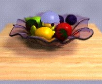
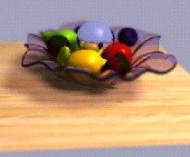

1997 Symposium on Interactive 3D Graphics

April 27-30, 1997
Providence, RI
Extended abstracts due: Sept. 25, 1996
Acceptance notification: Nov. 11, 1996
Final papers for Proceedings due: Dec. 18, 1996
The focus of the symposium will be on the frontiers
of real-time, interactive 3D computer graphics and multimedia.
The symposium will consist of formal paper sessions
and hands-on demonstrations where research groups and vendors
will demonstrate the state-of-the-art in the field. Topics of
interest for technical sessions and demonstrations include:
 navigating, working and playing in complex, real-time
environments, including virtual worlds, Web-based systems, and
visualization systems;
navigating, working and playing in complex, real-time
environments, including virtual worlds, Web-based systems, and
visualization systems;
high-performance 3D graphics architectures, hardware,
and software for interacting with virtual worlds and teleoperation
systems;
innovative human-machine interface paradigms
for orienting and navigating in complex, real-time graphics environments,
including virtual worlds, hypermedia, and visualization systems;
novel sensory I/O devices for "seeing, hearing
and feeling in the virtual world";
perceptual and psychological issues regarding
multimodal interaction and operation in complex virtual spaces;
interactive model building tools for shaping,
building or sculpting of objects, and the interactive assembly
and manipulation of systems of parts;
languages or APIs for specifying geometry and
behaviors for interactive and network based applications;
algorithms for animating complex reactive characters;
authoring tools for constructing reactive models;
interactive simulations distributed over local
and long-haul networks;
software for representing, designing,
visualizing and interacting with complex geometry, structure and
behavior.
Extended abstracts 3 to 5 pages long describing original
work should reflect the contents of the final paper and the symposium
presentation. Accompanying video tapes where appropriate are strongly
recommended. Performance claims should be supported by actual
measurements. Full explanations of any special techniques necessary
to achieve real-time picture generation and display should be
provided. Abstracts should clearly state what has been achieved
and how this makes a contribution to the state-of-the-art in interactive
3D graphics.
The program committee will review the abstracts and
notify the author(s) whether the paper will be accepted as a short
or long paper, and whether the presentation will be short or long.
Short papers will be 4 pages; long papers may be up to 12 pages.
Short presentations will be 15 minutes; long presentations will
be up to 25 minutes. Abstracts should clearly state what has been
achieved and how this makes a contribution to the state- of-the-art
in interactive 3D graphics. Attendance will be limited to 250
participants. Places will be reserved for up to 50 students at reduced
registration rates.
Submit 5 copies of an extended abstract
by 5:00 PM EDT, Sept. 25, 1996 to:
David Zeltzer
1997 Symposium on Interactive 3D Graphics
Massachusetts Institute of Technology
Room 36-763, 50 Vassar Street
Cambridge MA 02139
Tel.: (617) 253-5995
e-mail: dz@vetrec.mit.edu
No fax or e-mail submissions accepted.
Requests for Registration Forms and Information:
Lisa Manekofsky
Dept. of Computer Science
Brown University
Providence RI 02912
(401) 863-7654
Fax: (401) 863-7657
email: ljm@cs.brown.edu
Symposium Chair:
Andy van Dam,
Brown University
Program Co-chairs:
Michael Cohen,
Microsoft Research
David Zeltzer,
David Sarnoff Corporation
Program Committee:
Kurt Akeley, Silicon Graphics
Fred Brooks, Jr., University of North Carolina
Ingrid Carlbom, Bell Laboratories, Lucent Technologies
Ed Catmull, PIXAR
Frank Crow, Interval Research
Jessica Hodgins, Georgia Institute of Technology
Fred Kitson, Hewlett Packard
Marc Levoy, Stanford University
Dan Ling, Microsoft
Peter Schröder, California Institute
of Technology
Susumu Tachi, University of Tokyo
Michael Zyda, Naval Postgraduate School